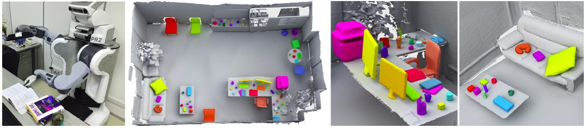
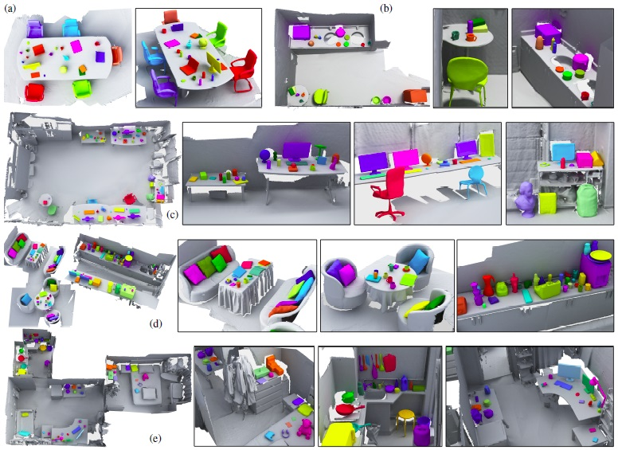

1Shenzhen
VisuCA Key
Lab/SIAT, 2National
University of
Defense Technology,
3Shandong University
ACM Transactions
on Graphics (SIGGRAPH Asia 2015), 34(6), conditionally accepted

Figure 1: Autonomous scene scanning and reconstruction with object analysis aided by robot pushing. Left: A PR-2 robot with one arm
equipped with a depth camera interacts with a cluttered table-top scene. Middle: The reconstructed scene with extracted individual objects
shown with distinct colors. Right: Zoomed-in views.
Abstract
Detailed scanning of indoor scenes is tedious for humans. We propose
autonomous scene scanning by a robot to relieve humans from
such a laborious task. In an autonomous setting, detailed scene acquisition
is inevitably coupled with scene analysis at the required
level of detail. We develop a framework for object-level scene reconstruction
coupled with object-centric scene analysis. As a result,
the autoscanning and reconstruction will be object-aware, guided
by the object analysis. The analysis is, in turn, gradually improved
with progressively increased object-wise data fidelity. In realizing
such a framework, we drive the robot to execute an iterative
analyze-and-validate algorithm which interleaves between object
analysis and guided validations.
The object analysis incorporates online learning into a robust graphcut
based segmentation framework, achieving a global update of
object-level segmentation based on the knowledge gained from
robot-operated local validation. Based on the current analysis,
the robot performs proactive validation over the scene with physical
push and scan refinement, aiming at reducing the uncertainty
of both object-level segmentation and object-wise reconstruction.
We propose a joint entropy to measure such uncertainty based on
segmentation confidence and reconstruction quality, and formulate
the selection of validation actions as a maximum information gain
problem. The output of our system is a reconstructed scene with
both object extraction and object-wise geometry fidelity.
Figure
3: Plot of push information gain for all points (c) scanned for the input scene (a), based on the segmentation in (b). In (d), physically infeasible pushing points are filtered out, by zeroing their information gain values. The Next Besh Pushes (NBPs) can be selected from the remaining non-zero points.

Figure
4: A gallery of object-aware reconstruction results for five real-life indoor scenes, including a meeting room (a), a kitchen (b), a
computer lab (c), a cafe (d), and a three-room apartment (e). Our system extracts 18, 19, 41, 93 and 60 objects for these scenes, respectively,
while achieving object-wise quality reconstruction. The reconstruction of large scale room structure (e.g., ground, walls and large furnitures)
is incomplete, which is not the focus of this work. Note in the kitchen of the apartment (the second zoom-in view in (e)), the hanging kitchen
wares are extracted by segmentation without physical validation.
Thanks
We thank all the reviewers for their valuable comments and constructive suggestions.
We are especially grateful to Hao Zhang and Daniel Cohen-Or for their help and discussion.
We would also like to acknowledge our research grants:
NSFC (61232011, 61572507, 61202333, 61272327),
National 973 Program (2015CB352500, 2015CB352501),
Guangdong Science and Technology Program (2015A030312015, 2014B050502009, 2014TX01X033),
Shenzhen VisuCA Key Lab (CXB201104220029A),
The Fundamental Research Funds of Shandong University,
and SIAT Innovation Program for Excellent Young Researchers (201402).
We provide the C++ code of object-level segmentation and entropy estimation used in our system.
Source code (ZIP, ??MB)
Bibtex
@article
{xu_siga15,
title = {Autoscanning for Coupled Scene Reconstruction and Proactive Object Analysis},
author
= {Kai
Xu and Hui Huang and Yifei Shi and Hao Li and Pinxin Long and Jiannong Caichen and Wei Sun
and Baoquan Chen},
journal
= {ACM Transactions on Graphics (Proc. of SIGGRAPH Asia 2015)},
volume
= {34},
number
= {6},
pages
= {to appear},
year
= {2015}
}